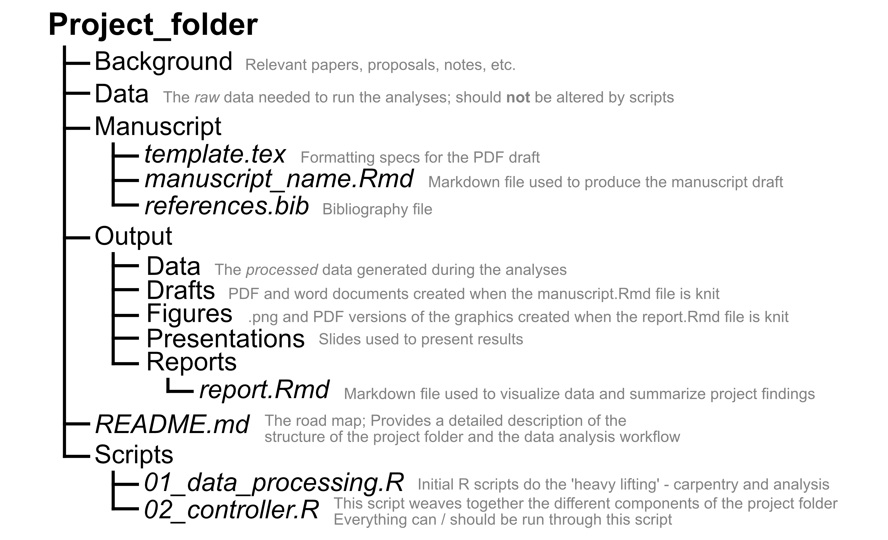

Intro to the Work Flow
In general, operating in academia means projects will be geared towards eventual publication. Our goal is not just to share results, however, but to help people understand the analyses we did. All publications from our group will therefore include some way of accessing the associated data and scripts. However, this gets us only partway towards our goal of replicable and understandable analyses. Project materials need to be well organized and thoroughly documented (not just “accessible”) in order for other people to follow what was done. This will also help other lab members, if at some point someone wants to follow up on your project, expand the scope of data you collected, or apply similar analyses to their data sets. This goal of making your work accessible, replicable, and understandable shapes the workflow I will ask you to use.
Project Folders
This workflow is organized around a “project folder” - a collection of all materials (background information, data, scripts, outputs, etc.) used for a project, contained within a single directory. This concept is described in these slides and here. I’ve set up a template project folder that we’ll generally use to get your work started. A map of this project folder is included below to give you some idea of the framework the workflow described on this page works within. How the project folder functions during Project Development is expanded in that section.

As you can probably already tell, the workflow also relies on Git and GitHub to version control your work, to collaborate and review code, and to share data and results. Project folders and GitHub integrate nicely, and we’ll use a specific workflow while developing projects and writing code based on “GitHub flow”.
Initial Setup
This workflow tends to “just work” once everything is set up and you get familiar with it. However, there’s a fair amount of stuff to work out before you get to that point. Luckily, these are generally one-time investments (per machine, that is).
You should already be added to the GitHub organization as a member, but if not, remind me.
Install R and RStudio.
Make sure you have git installed on your local machine by this point. There are some helpful instructions here if needed.
Make sure you’ve got the connections between Git, GitHub, and RStudio worked out. See here for a nice walk-through. We will generally use HTTPS when working with GitHub in RStudio.
It’s a good idea to have a basic familiarity with the terminology of Git and GitHub before you really dive in. For example, you should know what “pull”, “commit”, “push”, and “branch” mean in the context of a GitHub repo. See:
Here for the GitHub documentation, including separate pages for commits, pulling, and pushing. Note that while these pages assume you’ll be working with Git in the command line, rather than RStudio, the general descriptions still apply.
Here for a very in-depth written intro.
Here for a quick video introduction (starts at ~1:20 where the description of Git starts).
Here for a nice visual representation of some of the basis Git/GitHub actions.
Here for a walk-through of a fairly similar Git/GitHub/RStudio workflow. There’s some differences (or things you won’t have to worry about because I will take care of it for you when we set your project up), but the sections on ‘Creating an RStudio project from version control’ and ‘Working with Git from within RStudio’ are definitely relevant.
General Note
In addition to the data and code you work on, you can make valuable contributions to the development of the lab as a whole by writing up the “invisible” work that you did - what did it take to get to a point where you could begin to engage with the project work flow? Did you find any useful resources that helped you? Are there aspects that were confusing or poorly explained to you? Were there obstacles that could be removed? After working with these systems for a while, it’s difficult to accurately remember what it’s really like to be faced with these challenges for the first time - your insights here can help design as smooth an on-boarding experience as possible!
- See here for the initial inspiration for this.